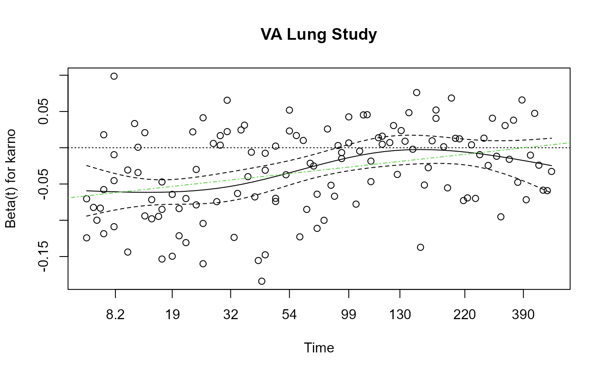

Graphical Test of Proportional Hazards
plot.cox.zph.RdDisplays a graph of the scaled Schoenfeld residuals, along with a smooth curve.
Usage
# S3 method for cox.zph
plot(x, resid=TRUE, se=TRUE, df=4, nsmo=40, var,
xlab="Time", ylab, lty=1:2, col=1, lwd=1, hr=FALSE, ...)Arguments
- x
result of the
cox.zphfunction.- resid
a logical value, if
TRUEthe residuals are included on the plot, as well as the smooth fit.- se
a logical value, if
TRUE, confidence bands at two standard errors will be added.- df
the degrees of freedom for the fitted natural spline,
df=2leads to a linear fit.- nsmo
number of points to use for the lines
- var
the set of variables for which plots are desired. By default, plots are produced in turn for each variable of a model. Selection of a single variable allows other features to be added to the plot, e.g., a horizontal line at zero or a main title.
This has been superseded by a subscripting method; see the example below.
- hr
if TRUE, label the y-axis using the estimated hazard ratio rather than the estimated coefficient. (The plot does not change, only the axis label.)
- xlab
label for the x-axis of the plot
- ylab
optional label for the y-axis of the plot. If missing a default label is provided. This can be a vector of labels.
- lty, col, lwd
line type, color, and line width for the overlaid curve. Each of these can be vector of length 2, in which case the second element is used for the confidence interval.
- ...
additional graphical arguments passed to the
plotfunction.
Examples
vfit <- coxph(Surv(time,status) ~ trt + factor(celltype) +
karno + age, data=veteran, x=TRUE)
temp <- cox.zph(vfit)
plot(temp, var=3) # Look at Karnofsy score, old way of doing plot
plot(temp[3]) # New way with subscripting
abline(0, 0, lty=3)
# Add the linear fit as well
abline(lm(temp$y[,3] ~ temp$x)$coefficients, lty=4, col=3)
title(main="VA Lung Study")
